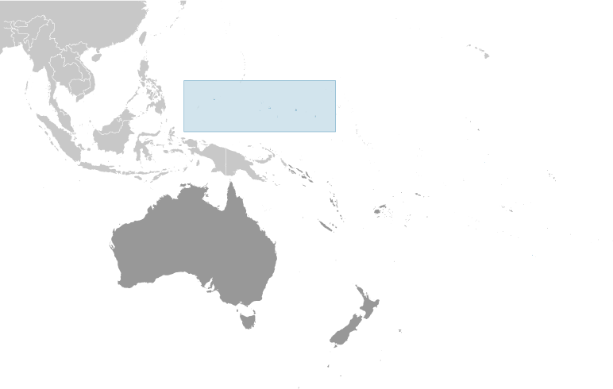
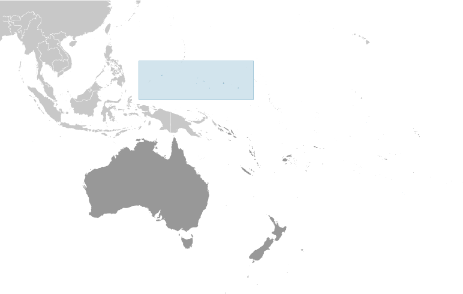

Australia-Oceania :: MICRONESIA, FEDERATED STATES OF
Introduction :: MICRONESIA, FEDERATED STATES OF
-
The Caroline Islands are a widely scattered archipelago in the western Pacific Ocean; they became part of a UN Trust Territory under US administration following World War II. The eastern four island groups adopted a constitution in 1979 and chose to become the Federated States of Micronesia. (The westernmost island group became Palau.) Independence came in 1986 under a Compact of Free Association with the US, which was amended and renewed in 2004. Present concerns include large-scale unemployment, overfishing, overdependence on US foreign aid, and state perception of inequitable allocation of US aid.
Geography :: MICRONESIA, FEDERATED STATES OF
-
Oceania, island group in the North Pacific Ocean, about three-quarters of the way from Hawaii to Indonesia6 55 N, 158 15 EOceaniatotal: 702 sq kmland: 702 sq kmwater: 0 sq km (fresh water only)note: includes Pohnpei (Ponape), Chuuk (Truk) Islands, Yap Islands, and Kosrae (Kosaie)country comparison to the world: 191four times the size of Washington, DC (land area only)0 km6,112 kmterritorial sea: 12 nmexclusive economic zone: 200 nmtropical; heavy year-round rainfall, especially in the eastern islands; located on southern edge of the typhoon belt with occasionally severe damageislands vary geologically from high mountainous islands to low, coral atolls; volcanic outcroppings on Pohnpei, Kosrae, and Chuukmean elevation: NAelevation extremes: lowest point: Pacific Ocean 0 mhighest point: Nanlaud on Pohnpei 782 mtimber, marine products, deep-seabed minerals, phosphateagricultural land: 25.5%arable land 2.3%; permanent crops 19.7%; permanent pasture 3.5%forest: 74.5%other: 0% (2011 est.)0 sq km NA (2012)the majority of the populaton lives in the coastal areas of the high islands; the mountainous interior is largely uninhabited; less than half of the population lives in urban areastyphoons (June to December)overfishing, climate change, pollutionparty to: Biodiversity, Climate Change, Climate Change-Kyoto Protocol, Desertification, Hazardous Wastes, Law of the Sea, Ozone Layer Protectionsigned, but not ratified: none of the selected agreementscomposed of four major island groups totaling 607 islands
People and Society :: MICRONESIA, FEDERATED STATES OF
-
104,196 (July 2017 est.)country comparison to the world: 194noun: Micronesian(s)adjective: Micronesian; Chuukese, Kosraen(s), Pohnpeian(s), YapeseChuukese/Mortlockese 49.3%, Pohnpeian 29.8%, Kosraean 6.3%, Yapese 5.7%, Yap outer islanders 5.1%, Polynesian 1.6%, Asian 1.4%, other 0.8% (2010 est.)English (official and common language), Chuukese, Kosrean, Pohnpeian, Yapese, Ulithian, Woleaian, Nukuoro, KapingamarangiRoman Catholic 54.7%, Protestant 41.1% (includes Congregational 38.5%, Baptist 1.1%, Seventh Day Adventist 0.8%, Assembly of God 0.7%), Mormon 1.5%, other 1.9%, none 0.7%, unspecified 0.1% (2010 est.)0-14 years: 30.3% (male 16,050/female 15,520)15-24 years: 19.59% (male 10,236/female 10,173)25-54 years: 39.19% (male 19,737/female 21,094)55-64 years: 6.99% (male 3,560/female 3,727)65 years and over: 3.93% (male 1,849/female 2,250) (2017 est.)total dependency ratio: 62.4youth dependency ratio: 55.3elderly dependency ratio: 7.1potential support ratio: 14.1 (2015 est.)24total: 25.1 yearsmale: 24.4 yearsfemale: 25.8 years (2017 est.)country comparison to the world: 157-0.52% (2017 est.)country comparison to the world: 22220 births/1,000 population (2017 est.)country comparison to the world: 804.2 deaths/1,000 population (2017 est.)country comparison to the world: 207-20.9 migrant(s)/1,000 population (2017 est.)country comparison to the world: 221the majority of the populaton lives in the coastal areas of the high islands; the mountainous interior is largely uninhabited; less than half of the population lives in urban areasurban population: 22.5% of total population (2017)rate of urbanization: 1.33% annual rate of change (2015-20 est.)PALIKIR (capital) 7,000 (2014)at birth: 1.05 male(s)/female0-14 years: 1.03 male(s)/female15-24 years: 1.01 male(s)/female25-54 years: 0.94 male(s)/female55-64 years: 0.97 male(s)/female65 years and over: 0.81 male(s)/femaletotal population: 0.98 male(s)/female (2016 est.)100 deaths/100,000 live births (2015 est.)country comparison to the world: 72total: 19.8 deaths/1,000 live birthsmale: 21.9 deaths/1,000 live birthsfemale: 17.5 deaths/1,000 live births (2017 est.)country comparison to the world: 80total population: 73.1 yearsmale: 71.1 yearsfemale: 75.3 years (2017 est.)country comparison to the world: 1392.41 children born/woman (2017 est.)country comparison to the world: 8213.7% of GDP (2014)country comparison to the world: 50.19 physicians/1,000 population (2009)3.2 beds/1,000 population (2009)improved:urban: 94.8% of populationrural: 87.4% of populationtotal: 89% of populationunimproved:urban: 5.2% of populationrural: 12.6% of populationtotal: 11% of population (2015 est.)improved:urban: 85.1% of populationrural: 49% of populationtotal: 57.1% of populationunimproved:urban: 14.9% of populationrural: 51% of populationtotal: 42.9% of population (2015 est.)NANANAnote: active local transmission of Zika virus by Aedes species mosquitoes has been identified in this country (as of August 2016); it poses an important risk (a large number of cases possible) among US citizens if bitten by an infective mosquito; other less common ways to get Zika are through sex, via blood transfusion, or during pregnancy, in which the pregnant woman passes Zika virus to her fetus (2016)45.8% (2016)country comparison to the world: 10NA
Government :: MICRONESIA, FEDERATED STATES OF
-
conventional long form: Federated States of Micronesiaconventional short form: nonelocal long form: Federated States of Micronesialocal short form: noneformer: Trust Territory of the Pacific Islands, Ponape, Truk, and Yap Districtsabbreviation: FSMetymology: the term "Micronesia" is a 19th-century construct of two Greek words, "micro" (small) and "nesoi" (islands), and refers to thousands of small islands in the western Pacific Oceanfederal republic in free association with the USname: Palikirgeographic coordinates: 6 55 N, 158 09 Etime difference: UTC+11 (16 hours ahead of Washington, DC, during Standard Time)4 states; Chuuk (Truk), Kosrae (Kosaie), Pohnpei (Ponape), Yap3 November 1986 (from the US-administered UN trusteeship)Constitution Day, 10 May (1979)drafted June 1975, ratified 1 October 1978, entered into force 10 May 1979; amended 1990; note - in 2001, all 26 amendments proposed by the FSM constitutional convention were defeated in a national referendum (2016)mixed legal system of common and customary lawhas not submitted an ICJ jurisdiction declaration; non-party state to the ICCtcitizenship by birth: nocitizenship by descent only: at least one parent must be a citizen of FSMdual citizenship recognized: noresidency requirement for naturalization: 5 years18 years of age; universalchief of state: President Peter M. CHRISTIAN (since 11 May 2015); Vice President Yosiwo P. GEORGE (since 11 May 2015); note - the president is both chief of state and head of governmenthead of government: President Peter M. CHRISTIAN (since 11 May 2015); Vice President Yosiwo P. GEORGE (since 11 May 2015)cabinet: Cabinet includes the vice president and the heads of the 8 executive departmentselections/appointments: president and vice president indirectly elected by Congress from among the 4 'at large' senators for a 4-year term (eligible for a second term); election last held on 11 May 2015 (next to be held in 2019)election results: Peter M. CHRISTIAN elected president by Congress; Yosiwo P. GEORGE elected vice presidentdescription: unicameral Congress (14 seats; 10 members directly elected in single-seat constituencies by simple majority vote to serve 2-year terms and 4 directly elected from each of the 4 states by proportional representation vote to serve 4-year terms)elections: last held on 7 March 2017 (next to be held in March 2019)election results: percent of vote - NA; seats - independent 14highest court(s): Federated States of Micronesia (FSM) Supreme Court (consists of the chief justice and not more than 5 associate justices and organized into appellate and criminal divisions)judge selection and term of office: justices appointed by the president of the Federated States of Micronesia with the approval of two-thirds of Congress; justices appointed for lifesubordinate courts: the highest state-level courts are: Chuuk Supreme Court; Korsae State Court; Pohnpei State Court; Yap State Courtno formal partiesNAACP, ADB, AOSIS, FAO, G-77, IBRD, ICAO, ICRM, IDA, IFC, IFRCS, IMF, IOC, IOM, IPU, ITSO, ITU, MIGA, OPCW, PIF, Sparteca, SPC, UN, UNCTAD, UNESCO, WHO, WMOchief of mission: Ambassador Akillino Harris SUSAIA (since 24 April 2017)chancery: 1725 N Street NW, Washington, DC 20036telephone: [1] (202) 223-4383FAX: [1] (202) 223-4391consulate(s) general: Honolulu (HI), Tamuning (Guam)chief of mission: Ambassador Robert Annan RILEY III (since 16 August 2016)embassy: 101 Upper Pics Road, Koloniamailing address: P. O. Box 1286, Kolonia, Pohnpei, 96941; U.S. Embassy in Micronesia, 4120 Kolonia Place, Washington, D.C. 20521-4120telephone: [691] 320-2187FAX: [691] 320-2186light blue with four white five-pointed stars centered; the stars are arranged in a diamond pattern; blue symbolizes the Pacific Ocean, the stars represent the four island groups of Chuuk, Kosrae, Pohnpei, and Yapfour, five-pointed, white stars on a light blue field; national colors: light blue, whitename: "Patriots of Micronesia"lyrics/music: unknownnote: adopted 1991; also known as "Across All Micronesia"; the music is based on the 1820 German patriotic song "Ich hab mich ergeben", which was the West German national anthem from 1949-1950; variants of this tune are used in Johannes Brahms' "Festival Overture" and Gustav Mahler's "Third Symphony"
Economy :: MICRONESIA, FEDERATED STATES OF
-
Economic activity consists largely of subsistence farming and fishing, and government, which employs two-thirds of the adult working population and receives funding largely - 58% in 2013 – from Compact of Free Association assistance provided by the US. The islands have few commercially valuable mineral deposits. The potential for tourism is limited by isolation, lack of adequate facilities, and limited internal air and water transportation.Under the terms of the original Compact, the US provided $1.3 billion in grants and aid from 1986 to 2001. The US and the Federated States of Micronesia (FSM) negotiated a second (amended) Compact agreement in 2002-03 that took effect in 2004. The amended Compact runs for a 20-year period to 2023; during which the US will provide roughly $2.1 billion to the FSM. The amended Compact also develops a trust fund for the FSM that will provide a comparable income stream beyond 2024 when Compact grants end.The country's medium-term economic outlook appears fragile because of dependence on US assistance and lackluster performance of its small and stagnant private sector.$334 million (2016 est.)$320 million (2015 est.)$305 million (2014 est.)note: data are in 2016 dollarscountry comparison to the world: 215$323 million (2016 est.)3% (2016 est.)3.7% (2015 est.)-2.4% (2014 est.)country comparison to the world: 138$3,300 (2016 est.)$3,200 (2015 est.)$3,100 (2014 est.)note: data are in 2016 dollarscountry comparison to the world: 190household consumption: 83.5%government consumption: 41.8%investment in fixed assets: 24.3%investment in inventories: 0%exports of goods and services: 26.6%imports of goods and services: -76.2% (2013 est.)agriculture: 26.3%industry: 18.9%services: 54.8% (2013 est.)taro, yams, coconuts, bananas, cassava (manioc, tapioca), sakau (kava), Kosraen citrus, betel nuts, black pepper, fish, pigs, chickenstourism, construction; specialized aquaculture, craft items (shell and wood)NA%37,920 (2010 est.)country comparison to the world: 201agriculture: 0.9%industry: 5.2%services: 93.9%note: two-thirds of the labor force are government employees (2013 est.)16.2% (2010 est.)country comparison to the world: 17726.7% (2000 est.)lowest 10%: NA%highest 10%: NA%61.1 (2013 est.)country comparison to the world: 4revenues: $213.8 millionexpenditures: $192.1 million (FY12/13 est.)66.4% of GDP (FY12/13 est.)country comparison to the world: 56.7% of GDP (FY12/13 est.)country comparison to the world: 524.8% of GDP (2016 est.)25.8% of GDP (2015 est.)country comparison to the world: 1731 October - 30 September0.5% (2016 est.)-0.2% (2015 est.)country comparison to the world: 10015.7% (31 December 2016 est.)15.93% (31 December 2015 est.)country comparison to the world: 36$196 million (31 December 2013 est.)country comparison to the world: 184$178.3 million (31 December 2015 est.)country comparison to the world: 192$56.98 million (2013 est.)$-103 million (31 December 2015 est.)country comparison to the world: 189$NA$10 million (2016 est.)$26.98 million (2015 est.)country comparison to the world: 55$88.3 million (2013 est.)$39.88 million (2015 est.)country comparison to the world: 197fish, sakau (kava), betel nuts, black pepper$258.5 million (2013 est.)$263.4 million (2015 est.)country comparison to the world: 203food, beverages, clothing, computers, household electronics, appliances, manufactured goods, automobiles, machinery and equipment, furniture, tools$157 million (31 December 2016 est.)country comparison to the world: 162$93.6 million (2013 est.)$93.5 million (2012 est.)country comparison to the world: 195$15.8 million (2013 est.)$34.4 million (2012 est.)country comparison to the world: 132the US dollar is used
Energy :: MICRONESIA, FEDERATED STATES OF
-
population without electricity: 42,934electrification - total population: 59%electrification - urban areas: 100%electrification - rural areas: 45% (2012)192 million kWh (2002)country comparison to the world: 191178.6 million kWh (2002)country comparison to the world: 1930 kWh (2013 est.)country comparison to the world: 1360 kWh (2013 est.)country comparison to the world: 15018,000 kW (2015 est.)country comparison to the world: 20696% of total installed capacity (2015 est.)country comparison to the world: 520% of total installed capacity (2015 est.)country comparison to the world: 911% of total installed capacity (2013 est.)country comparison to the world: 1463% of total installed capacity (2013 est.)country comparison to the world: 1110 bbl/day (2014)country comparison to the world: 1370 bbl/day (2014)country comparison to the world: 1240 bbl/day (2014)country comparison to the world: 1280 bbl (1 January 2014)country comparison to the world: 1360 bbl/day (2014)country comparison to the world: 1440 bbl/daycountry comparison to the world: 1560 cu m (2014)country comparison to the world: 1360 cu mcountry comparison to the world: 140105 Mt (2010 est.)country comparison to the world: 214
Communications :: MICRONESIA, FEDERATED STATES OF
-
total subscriptions: 6,808subscriptions per 100 inhabitants: 6 (July 2016 est.)country comparison to the world: 204total: 31,400subscriptions per 100 inhabitants: 30 (July 2016 est.)country comparison to the world: 208general assessment: adequate systemdomestic: islands interconnected by shortwave radiotelephone (used mostly for government purposes), satellite (Intelsat) ground stations, and some coaxial and fiber-optic cable; mobile-cellular service available on the major islandsinternational: country code - 691; satellite earth stations - 5 Intelsat (Pacific Ocean); in 2015, Fiber Optic was launched and is the primary communication path to the outside world (2016)no TV broadcast stations; each state has a multi-channel cable service with TV transmissions carrying roughly 95% imported programming and 5% local programming; about a half-dozen radio stations (2009).fmtotal: 33,000percent of population: 31.5% (July 2016 est.)country comparison to the world: 196
Transportation :: MICRONESIA, FEDERATED STATES OF
-
V6 (2016)6 (2013)country comparison to the world: 173total: 61,524 to 2,437 m: 4914 to 1,523 m: 2 (2017)total: 388 kmpaved: 184 kmunpaved: 204 km (2015)country comparison to the world: 201total: 3by type: cargo 1, passenger/cargo 2 (2010)country comparison to the world: 140major seaport(s): Colonia (Tamil Harbor), Molsron Lele Harbor, Pohnepi Harbor
Military and Security :: MICRONESIA, FEDERATED STATES OF
-
no regular military forces (2012)defense is the responsibility of the US
Transnational Issues :: MICRONESIA, FEDERATED STATES OF
-
nonemajor consumer of cannabis